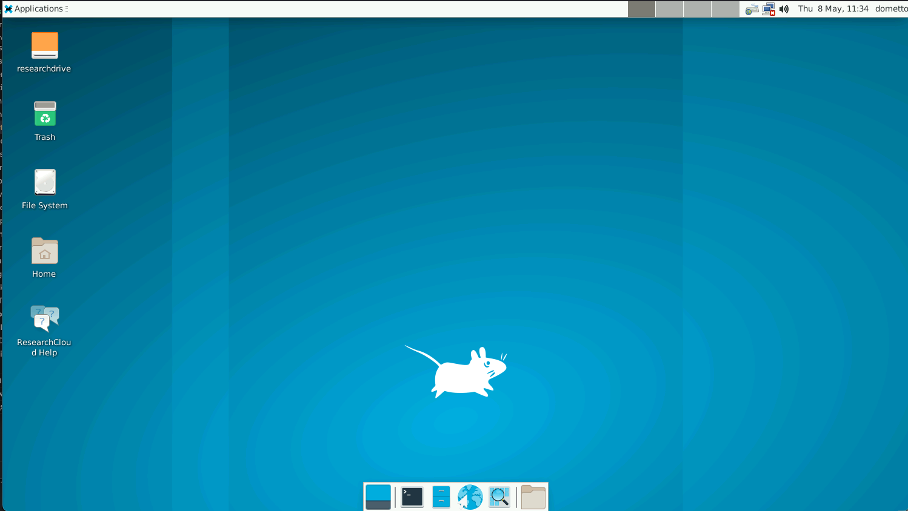
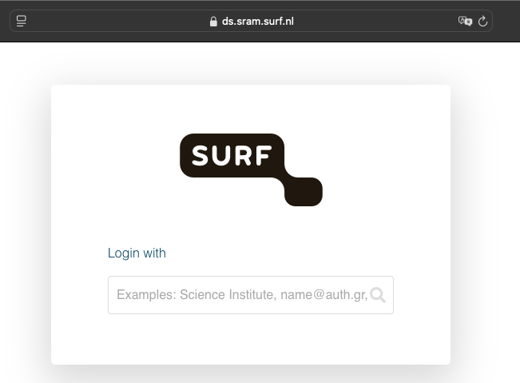
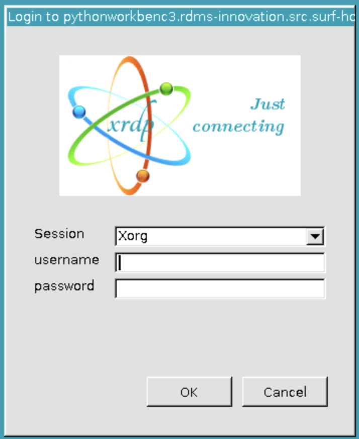

First steps
This page describes all general steps that a user needs to perform to be able to start working with SURF Research cloud:
Contents:
- Creating storage
- Creating a workspace
- Pausing, Resuming, Deleting a workspace
- Logging in to your workspace
- Getting data inside your workspace
Research Cloud portal
When you have completed an onboarding procedure, you can login using the following link:
Create storage volume
Why a storage volume?
In most cases you need to create a storage volume before you create a workspace. A workspace has limited storage and is temporary; all data stored on the workspace itself are deleted when a workspace is deleted. You can see a storage volume as a USB stick that you can attach to a workspace. A storage volume is persistent, so when you remove a workspace, all data on the storage volume will remain there. Storage volumes have good performance and are suitable for I/O-intensive computing tasks.
How to create a storage volume?
In the Research Cloud portal:
- Click ‘Create new storage’
- The Wizard will guide you through the steps, some tips:
- Choose Storage HPC
- Choose the Collaborative Organization of the project for which you want to create the storage volume
- Choose the wallet with which you ‘pay’ for the Storage Unit
- Choose the size. It is not possible to resize it later on, so don’t choose too small, but also don’t choose too large because it will cost more credits.
- Give your storage volume a descriptive name so you can recognize it later on (recommended: use one or two words separated with and underscore)
Where can I find the storage volume?
When you created a workspace and chose to attach a storage volume to the workspace (see below), the storage volume can be found under the directory path: /data Typically you want to create a project folder on the storage volume (e.g. /data/my_storage/my_project).
Create a workspace
A workspace can also be called a ‘Virtual Machine’ or a ‘Server’. It is a temporary ‘remote’ machine that you can login to and that has you can use to perform analyses or model runs. You ‘pay’ for the machine with the credits from your wallet until the workspace is being ‘paused’ or ‘deleted’. The more compute power you select the more credits it costs and the sooner your wallet will be empty.
See here for detailed information on how to create a workspace.
Workspace State
After creating a workspace following the steps above, you will be automatically sent back to the main page (aka Dashboard). Under ‘Workspaces’, you will find your newly created workspace in ‘State: Creating’. Depending on the Workspace that you selected, this can take between 10 and 30 minutes. When the State changes to ‘State: running’, the workspace is ready and you can login to your worspace. Important: your workspace consumes credits from your wallet when the State is running. It will stop consuming credits when:
- you change the State to Paused using the pause button
- you delete the workspace using the delete button
- your workspace is automatically deleted when the expiry date passes
- your workspace is automatically paused when your wallet is empty
Important: Logging out from your Workspace, or closing the browser window will not change the state of the Workspace. You can only do this in the Research Cloud Portal.
Pausing, Resuming, Deleting a workspace
Pause a workspace when you (and your colleagues) are not working on it and when there are no analyses going on or scripts running. To pause a workspace, find your workspace in the Research Cloud portal and click the Pause button.
Resume simply resume a paused workspace when you want to continue working with it. To do this, find the workspace in the Research Cloud portal and click ‘Resume’.
Delete a workspace if you will not be using the workspace for more than a couple of weeks (as paused workspaces do consume a small number of credits for storage). Make sure any work in progress (scripts and data) are at least stored on a Storage Volume, but preferably also backed up elsewhere (Yoda, OneDrive, Surfdrive, GitHub, etc.), as Research cloud storage is not backed up.
By default, only the person that created a workspace can Pause, Resume and Delete the workspace. You (or your colleague that initially got access to Research Cloud) can use SRAM to give persons permission to PAUSE, RESUME and DELETE a workspace that is created by someone else. It is also possible to share a wallet with a member of your CO in SRAM. See Add collaborators to existing project.
Getting access to your workspace
Prerequisites: your workspace has to be in ‘State: running’.
There are several ways to login to your workspace, depending on its type:
- Browser access to a desktop environment
- Browser access to a webapplication
- Remote Desktop Protocol
- SSH (command line)
See the workspace catalog for an overview of which workspace types allow which kind of login.
Browser access to a desktop environment
When?
For workspaces that provide a graphical interface to a desktop environment. For instance: Ubuntu Desktop, Python Workbench, Matlab. See the workspace catalog for an overview of Catalog Items that provide this kind of access.
These workspace types will present you with a Linux desktop environment in a browser window.
Authorization is handled using Single Sign-On, which for UU users means you can use your Solis-ID.
Note: if your workspace uses an older operating system (e.g. Ubuntu < 22), Single Sign-On is not yet available. In that case, you will have to authenticate using TOTP.

How?
Steps:
- Click the yellow “Access” button. You will be taken to a new page.
- Since authorization is handled using Single Sign On, and you are already logged in to the ResearchCloud portal, it may be that you don’t need to re-authenticate at all!
- If you do need to re-autenticate, you will be presented with a login prompt by SRAM. (see screenshot below)
- Select your institution (Utrecht University)
- Follow the steps to login using your institution’s login mechanism (Solis-ID).
- After logging in, you will see a Linux desktop in your browser!

Legacy: desktop workspaces with Time Based Password
If your workspace still uses an older operating system (e.g. Ubuntu < 22), Single Sign-On is not yet available. In that case, you will have to setup a Time Based Password for your Research Cloud account.
For these workspace types, this is what you will see when you click the yellow “Access” button:

- Click the yellow “Access button” for your workspace.
- You will be taken to your workspace’s address, e.g. (
https://workspacename.src.surf-hosted.nl).
- You will be taken to your workspace’s address, e.g. (
- You will see a prompt asking you to login to the Linux workpace.
- As a username, enter your Research Cloud username (not your Solis ID).
- You can lookup your username in the Research Cloud portal under the “Profile” tab.
- As a password, enter your time-based (TOTP) password for Research Cloud (not for your Solis ID).
Once you are logged in, you will be presented with a desktop environment in your browser. The environment used on ResearchCloud is a lightweight desktop called Xfce. See here for help with it.
Browser access to a webapplication
When?
Many catalog items provide you with a webapplication that can be accessed from your browser. For instance: Jupyter Notebooks, RStudio. See the workspace catalog for an overview of Catalog Items that provide this kind of access.
How?
There are two different forms of browser-based access to webapplications on Research Cloud:
Webapplications that support Single Sign-on.
These will present you with the normal login flow (including two-factor authentication) for your institutional login. That means Solis ID for UU students and staff, but collaborators from other institutions will use their own.
Since you are often already recently signed in to your institutional login to enter the Research Cloud, you will often not even need to authenticate again! Simply click the yellow “Access” button for your workspace.
Webapplications that require a time-based password
For these workspaces, you will need to setup a Time Based Password for your Research Cloud account.
Steps:
- Click the yellow “Access button” for your workspace.
- You will be taken to your workspace’s address.
- You will see a prompt asking you to login to the Linux workpace.
- As a username, enter your Research Cloud username (not your Solis ID).
- You can lookup your username in the Research Cloud portal under the “Profile” tab.
- As a password, enter your time-based (TOTP) password for Research Cloud (not for your Solis ID).
Remote Desktop Protocol
When?
This method can be used for most Windows Server workspaces, and any other workspaces that have an URL starting with RDP:// when you click on the workspace in the research cloud portal.
How?
To be able to login via RDP you need to setup a Time Based Password for your Research Cloud account.
You need an Remote Desktop client to be able to connect via RDP. On a Windows and MacOS PC you can use an application called ‘Remote Desktop’, on Linux we recommend ‘Remmina’.
The username that you need to type when you want to access the workspace can be found under the ‘Profile’ tab in the Research Cloud portal. The password to fill in is the Time based password (aka TOTP password) from the authenticator app on your mobile phone.
SSH
When?
For some workspaces this is the only option to login to your workspace. These are typically command line only workspaces (e.g. Ubuntu 20.04 command line).
Since connection via SSH also works for most other workspace types, it could also be a useful option in some other scenarios, e.g. when you want to copy a file from your laptop to the workspace.
How?
The research cloud documentation provides instructions on how to set up SSH for research cloud.
To connect to the workspace from a Windows computer you need specific software to use a ‘shell’ (also known as ‘terminal’), examples include Git Bash, PuTTY and MobaXterm. If you need to install something new, we would recommend MobaXterm.
On MacOS and Linux machines you can use the standard ‘Terminal’.
Getting data inside your workspace
Mounting online storage
If you have a Research Drive account, you can mount it in your workspace. This method is most easy, and works well for working with small datasets (e.g. <1 GB).
Transferring data
In many cases it is more reliable to get a copy of your data on the Storage unit that is attached to your workspace.
See the data transfer manuals for the most common ways of transferring data to your workspace.
Additionally, on some workspaces, the following methods may also be available:
- Upload from your laptop (Jupyter Notebook and Rstudio Workspaces).
- Download using the internet browser (on Ubuntu Desktop and Windows workspaces, for data stored on e.g. SURFdrive, OnedDive, etc.).